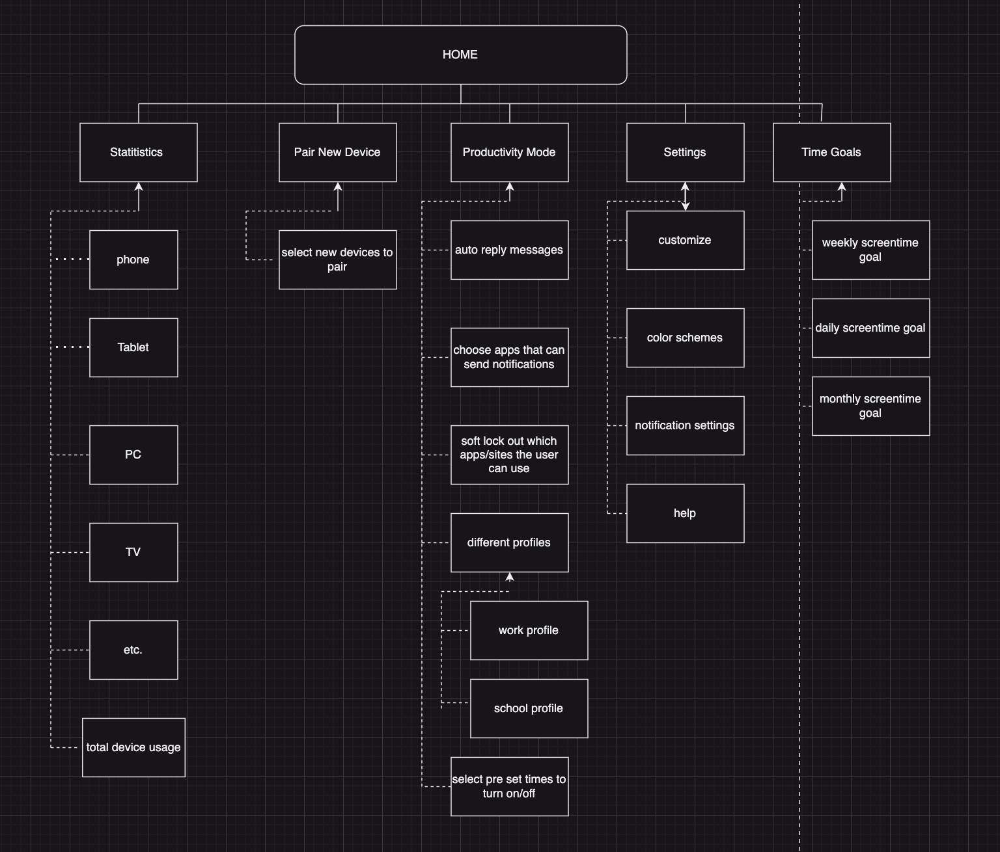
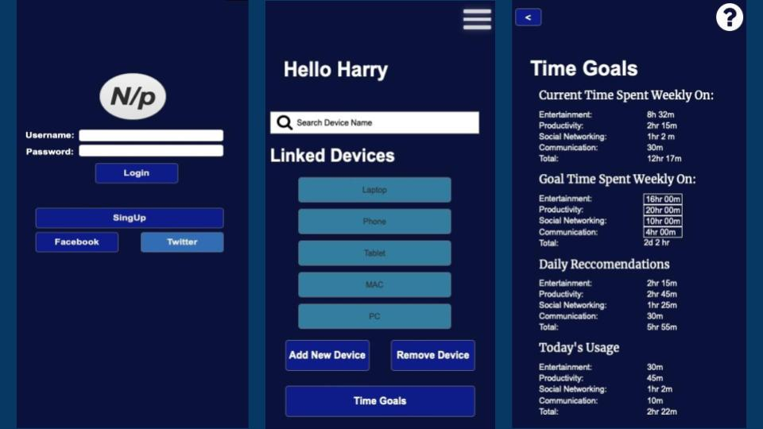
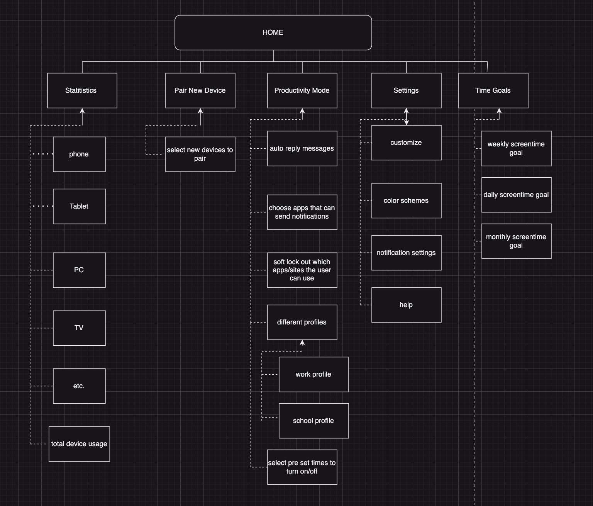
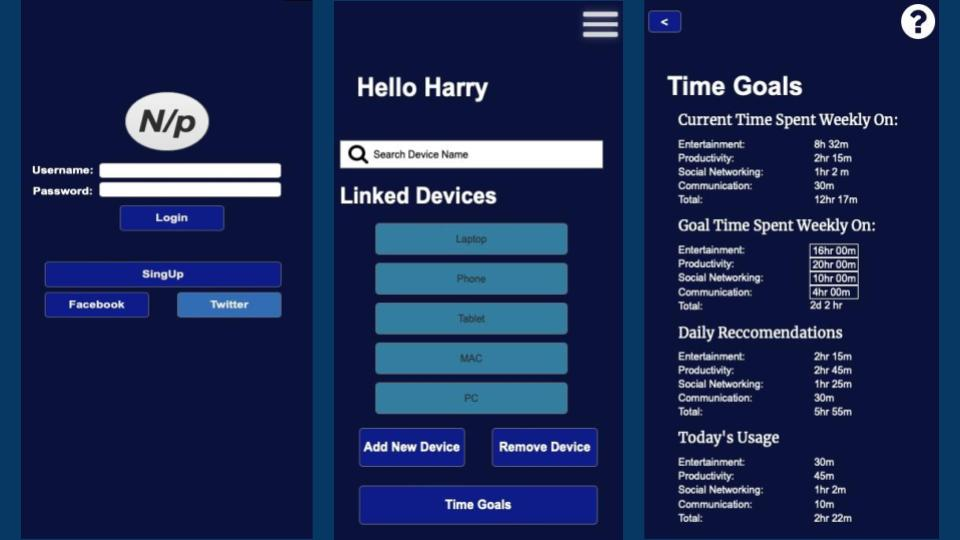

#UX #UI #Miro #Axure #Design #Research #Prototyping
Working with two classmates, we were given a task “to create an application, website, tool, etc. that will allow customers to perform the activities most important to them when seeking to fulfill specific health and wellness needs.”
Our Final Product was a fully functional prototype of an app that would help users visualise and limit their screentime on multiple devices
Following the the UX Design Process, we were able to understand, imagine, and create the final product
Using numerous sticky notes, we considered the prompt and brainstormed various possible products we could make until we decided to create something related to stress and device usage, something we found very prevalent.
We created and gathered data relating to those topics through user surveys and Google Forms
After analyzing the survey results, we were able to find a significant use of digital devices and stress/anxiety.
This became our User Need/Problem that we could design a solution to, helping us ideate Day/Night Savings, which at the time we named "Time Saver"
Using Xtensio, we created a user persona for one of our target audiences
We created a simple sitemap and User Flows to help us imagine the navigation of the site
Using Axure, we created a very primitive prototype of "Time Saver." We went in making a blue UI to create a sense of peace
After User tests, we were able to find parts of our program that we found to be unintuitive. We then redesigned individual parts of the prototype
After the class ended, I decided to rebrand it and redesign the entire interface with the intent of making it look more modern
Some of the Navigational Menus
Pages dedicated to showing the user insights about their screen time accross individual devices as well as all of their devices


 


